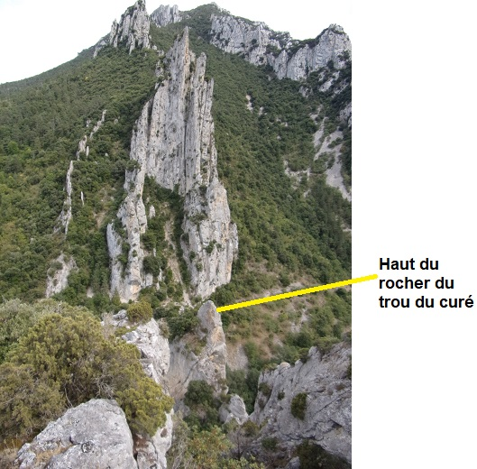
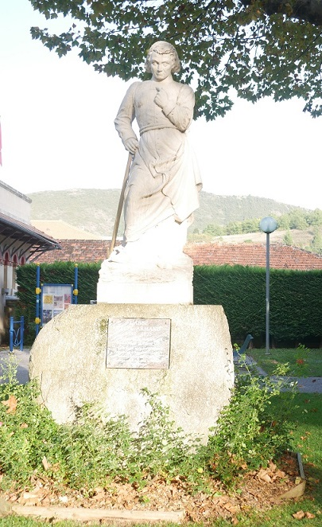
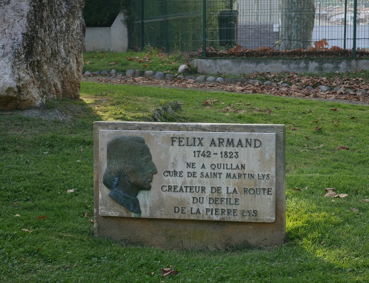
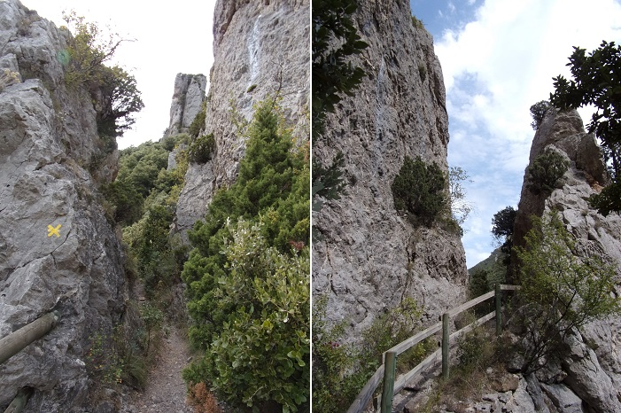

Saint Martin Lys - Félix Armand
Le passe muraille
Beaucoup d'articles de la presse locale racontent la vie de Félix Armand et son œuvre. Ils sont basés sur les ouvrages de Jean-Pierre de la Croix1 ou de Louis Amiel2, eux même dans leur style respectif étant assez proches et racontant les même anecdotes issus des mêmes témoins de l'époque.
Aussi je ne ferais pas preuve de grande originalité dans cette page...

Gravure de Félix Armand1
l'Abbé J.T. Lasserre a écrit le texte que je rapporte ici : Texte de l'appendice II retranscris dans son intégralité 4
Félix Armand naquit à Quillan, le 20 août 1742, de parents pauvres, mais sincèrement religieux. Son père remplissait les modestes fonctions de carillonneur. Après avoir fait ses études théologiques au Grand-Séminaire d'Alet, M. Armand fut ordonné prêtre le 28 mai 1768, et nommé vicaire de Quillan, où il se fit remarquer par ses talents oratoires. Le jeune vicaire aimait à diriger ses promenades vers l'entrée de la Pierre-Lys, étroit et profond défilé, d'où les flots de la rivière d'Aude se précipitent dans le vallon de Quillan. Assis, de longues heures, sur un rocher solitaire, le jeune prêtre interrogeait de l'œil, les sombres détours formés par les montagnes de rochers qui s'élèvent comme une muraille cyclopéenne, à l'entrée de cette gorge, l'une des plus affreuses et des plus pittoresques de France. Le défilé de la Pierre-Lys ne mesure que deux kilomètres et demi, et cependant il fallait, à cette époque, presque une journée, pour franchir la montagne du Quirbajou, au milieu de mille périls.
Pendant que le jeune vicaire cherche, sous l'inspiration du ciel, le moyen de remédier à ce triste état de choses, Mgr de Chantérac, Evêque d'Alet, lui confie, dans le pays de Sault, la petite paroisse de Galinagues, dont les habitants gardent encore un précieux souvenir de son court passage et de la sainteté de sa vie.
Mais le nouveau pasteur apercevait le Quirbajou de son poste élevé, et cette vue réveillait dans son âme le désir, chaque jour plus ardent, de tracer sur ses flancs une route plus facile. Enfin, après trois ans de séjour à Galinagues, il obtint, à force d'instances, d'être nommé à la Cure de Saint-Martin-en-Lys, dépourvue de titulaire depuis longtemps.
Saint-Martin est un petit village, situé sur la rive droite de l'Aude, entre Axat et la Pierre-Lys, qui doit son origine aux travailleurs dispersés du Prieuré de Saint-Martin, détruit par les Huguenots, comme nous l'avons déjà rapporté. Depuis cette époque, le hameau de Saint-Martin ne fit partie d'aucune paroisse, jusqu'au moment où Mgr Pavillon l'érigea en Cure, vers l'année 1643. Mais après la mort de ce Prélat, cette Cure fut réunie à l'église de Belvianes, annexe de Quillan. En 1775, Mgr de Chantérac rétablit le titre de cette Cure, en faveur de M. Félix Armand qui en prit possession le 15 novembre de la même année, comme l'atteste le Catalogue des Curés du diocèse d'Alet, publié à la page 240.
A la vue des misères de ses nouveaux paroissiens, les entrailles du pasteur sont émues de compassion. M. Armand demande dans la prière les lumières et les secours du ciel. Poussé par une inspiration irrésistible, qui vient d'en Haut, il se remet nuit et jour à l'étude du difficile problème de la rectification de la route du Quirbajou. Enfin le nouveau chemin est trouvé.
La charité, en exaltant le génie du modeste Curé de Saint-Martin, l'a rendu ingénieur. Cette route, qui semble impossible, doit longer la rivière d'Aude, pour supprimer et les longueurs et les périls de la traversée par le Quirbajou.
L'abbé Félix Armand était à peine âgé de trente-cinq ans, lorsqu'il commença de réaliser ce gigantesque projet. Non, il n'est pas donné à une plume humaine de raconter les prodiges surhumains accomplis par la foi et le courage de cet humble prêtre, dans le tracé de la nouvelle route.
Qu'il nous suffise de dire qu'un jour il se fit passer une corde sous les bras, et qu'il ordonna à trois de ses plus vigoureux paroissiens de le descendre sur le gouffre, à une profondeur vertigineuse, pour tracer le point précis de la route.

gravure extraite de l'ouvrage de Louis Amiel2
Pendant six ans, que dura la première ébauche du nouveau chemin, la prodigieuse activité du Curé de Saint-Martin ne se démentit pas un seul instant. Il implore la charité à Alet, Quillan, Axât, Limoux, etc.. Il est partout, frappant à toutes les portes des châteaux, des Monastères, des maisons opulentes... pour tendre la main, en faveur de sa pauvre paroisse, et pour la continuation de la nouvelle route, destinée à tirer de la plus profonde misère ses infortunés paroissiens.
Mais de toutes les sympathies, il en est une qu'il n'invoque jamais en vain : c'est celle de Mgr de Chantérac, occupé lui aussi à l'exécution du projet de la grand'route de Limoux à Quillan, œuvre gigantesque qui l'a fait surnommer par la reconnaissance de ses contemporains , « l'Evêque des chemins. »
Citons quelques pages de la belle Vie de M. Armand par M. L. Amiel :
" Tous les ans, à la belle saison, pendant la tenue des conférences ecclésiastiques, à Alet, M. Armand faisait appel à la charité bien connue de M. de Chantérac.
« Eh bien, mon cher Curé, lui dit un jour l'Evéque, comment vont vos paroissiens ?
— Fort mal, Monseigneur. Vous le savez, Saint-Martin est la paroisse la plus misérable de votre diocèse.
— Que faudrait-il pour secourir vos paroissiens?
— Un chemin, Monseigneur, un chemin.
— Mais ce chemin est impraticable, dit-on, et exigerait des sommes considérables.
— Je m'en charge, si on me donne quelques mille livres : je commencerai, d'autres achèveront. »
Alors le Prélat, ayant pris dans sa poche une bourse, dit à M. Armand : « Je veux vous aider dans votre entreprise ; tenez », et glissant dans la main droite de M. Armand un louis d'or (24 francs), puis un second, un troisième, un quatrième, il dit: « Est-ce assez ?
— Continuez, Monseigneur, puisque vous y êtes, et le Prélat continua à compter cinq, six, sept. . . quand Mlle de Chantérac, placée à côté de son frère, pinça la soutane du bienfaiteur, qui eut besoin de cet avertissement muet, pour serrer les cordons de sa bourse. »
Aussi, M. Armand ne quitte-t-il jamais le Palais épiscopal sans emporter quelques pièces d'or, qui, réunies à ses autres collectes, vont répandre un peu d'aisance à Saint-Martin, et ranimer les bras des travailleurs. Le lendemain, l'aube le retrouve à leur tête, sur les pentes de la Pierre-Lys , comme s'il n'avait pas fait la veille, dix grandes lieues.
Ainsi marchent les travaux, au milieu de tous les obstacles, sans que la persévérance de M. Armand en soit ébranlée. Enfin , après cinq ans d'efforts, on arrive aux masses de rochers qui ferment l'entrée des gorges, du côté de Belvianes.

Vue aérienne du roc du diable (photo Jean Lautier), c'est cette bande de pierre (curiosité géologique, s'il en est) qu'il s'agit de traverser, voir également la page sur la pierre-lys

Vue depuis le Belvédère du diable (ancien chemin St Martin/ Belvianes) de la barrière du diable
A cette vue, tous les bras tombent découragés. Seul, le Pasteur ne perd pas confiance ; il fait une dernière violence au ciel. Toute la population de Saint-Martin, jeunes et vieux, femmes et enfants le suivent processionnellement, la croix en tête, vers le Roc maudit, appelé depuis par la Reconnaissance publique le Trou du Curé. Là, après une courte et énergique allocution, dans laquelle il leur rappelle que leur vie et celle de leurs familles dépendent de ce suprême effort, il implore la bénédiction du ciel, saisit un pic, et frappe le premier coup. Tous les assistants l'imitent avec un nouveau courage, la tranchée est ouverte.
Enfin, le roc est vaincu, et le soleil de mai de l'an 1781, pénètre dans ses flancs restés clos depuis la création. Désormais un muletier, assis sur sa monture, en passant sous cette voûte, peut faire en moins d'une heure et presque sans péril, le même trajet, qui demandait auparavant une demi-journée, au milieu de mille dangers.
Nous lisons à la page 108 du Registre des visites de Mgr de Chantérac « que le 9 mai 1774, l'Evêque d'Alet , après être parti d'Axat , vint faire sa visite à Saint-Martin de la Pierre-Lys. »
Le procès-verbal de la visite se termine ainsi :
« Après quoi, nous aurions témoigné au dit Curé notre satisfaction de l'ordre et de la décence qu'il a mis dans son église et dans sa paroisse. Nous l'avons exhorté de continuer de tenir par sa vigilance et par son zèle, toutes choses dans les règles... »
La vérité nous oblige à dire que nous avons rarement trouvé de semblables éloges dans ce volume in-folio.
M. Amiel rapporte au sujet de cette visite pastorale, que Mgr de Chantérac s'arrêta frappé d'admiration, en contemplant ce gigantesque travail. Il saisit vivement la main du jeune Curé : « Mon fils, lui dit-il, faisant allusion au peu d'or qu'il avait donné, comme notre divin Maître, vous avez multiplié les pains. »
Le même volume des Visites, nous apprend que le Curé de Saint-Martin jouissait de toute la confiance de son Evêque qui le délégua le 29 mai 1789, pour visiter en son nom, la cure de Cailla. Nous possédons le procès-verbal de cette visite écrit de sa main, avec la signature Armand, commissaire.
Le Curé de Saint-Martin continuait à être la Providence visible de ses paroissiens, par les secours de toute espèce que son intelligente charité leur procurait. Le premier de tous dans la contrée, malgré le préjugé qui repoussait la pomme de terre, récemment introduite par Parmentier, il en propagea la culture à Saint-Martin. Sa récolte, soigneusement emmagasinée au presbytère, devenait pendant l'hiver, un puissant auxiliaire contre la disette.
Mais hélas ! le règne de la Terreur sur la France, l'arracha bientôt à son cher troupeau, dont il était le père bien-aimé. L'émigration avait commencé. Placé entre son serment devant Dieu, ou une abjuration solennelle, M. Armand n'avait pas hésité. A l'exemple de Mgr de Chantérac, il s'était rendu en Espagne, à Sabadell, où il eut la gloire d'être compté au nombre des vingt-un prêtres du diocèse d'Alet, qui eurent le bonheur d'assister à la mort et à la sépulture de leur saint Evêque, mort Confesseur de la Foi, le 27 avril 1793.
M. Armand arrosait de ses larmes le pain de l'exil ; le cœur lui saignait d'être séparé de son troupeau et de sa route inachevée, lorsqu'un des meilleurs ouvriers, celui que le Curé de Saint-Martin affectionnait le plus, fut député au nom de ses compagnons et de toute la paroisse, pour lui porter une lettre qui contenait l'expression naïve des regrets de tout le pays, le suppliant de revenir au milieu de son troupeau. Ce touchant message était couvert de signatures et ceux qui ne savaient pas écrire, avaient tracé une croix à la place de leur nom.
Le noble proscrit n'hésita plus à rentrer en France, à l'époque du Directoire, en mai 1797.
Ce fut dans cette période de si triste mémoire qu'il put apprécier la grandeur de dévouement que sa charité avait fait éclore autour de lui. Tous les émissaires de la République seraient venus à Saint-Martin , que pas un seul n'eût pu découvrir sa retraite, tant il était bien gardé par l'amour et le dévouement de ses paroissiens, qui tous auraient donné leur vie, pour conserver les jours si précieux de leur insigne bienfaiteur. Les autorités révolutionnaires du District étaient de connivence avec la population, et on ne manquait jamais de le prévenir à l'avance des visites inquisitoriales quelles étaient chargées de diriger contre sa personne. Aussitôt M. Armand, suivi d'un paroissien, chargé de quelques provisions et familiarisé avec l'inextricable dédale des rochers qui s'élèvent sur la rive droite, en face des ruines du Monastère , allait se réfugier dans une grotte cachée entre leurs pointes aériennes, et dont on aperçoit l'entrée, en passant sur la nouvelle route.
Le dimanche, les habitants de Saint-Martin et des villages voisins, se dirigeaient furtivement par petits groupes, vers une chapelle en ruines de Saint-Michel, située au-dessous de l'emplacement du Monastère : là, sur un autel improvisé au milieu des décombres, le prêtre proscrit offrait le saint Sacrifice, élevait dans les airs le Calice du Salut, comme les Confesseurs de la Foi de la primitive Eglise !!!
Lorsque les jours sanglants de la Révolution furent passés, M. Armand reprit son œuvre interrompue. Au mois d'août 1800, il se distingua au-dessus de tout éloge, dans le terrible incendie qui brûla 35 hectares de la forêt des Fanges. Sa noble conduite lui mérita une lettre de félicitation du Préfet de l'Aude, et un secours pour continuer la route.
Pendant ces travaux, on avait mis le feu à une mine pour faire sauter un rocher que le nouveau chemin contournait brusquement. Soudain, on aperçoit un muletier sur sa monture, de l'autre côté du sentier. Les cris redoublés des travailleurs l'invitent à fuir : le muletier hésite épouvanté ; encore une seconde et c'est fait de lui. Aussitôt un homme s'élance et bondit sur la mèche enflammée qu'il étouffe du pied.

gravure extraite de l'ouvrage de Louis Amiel2
Cet homme, on la deviné, c'est M. Félix Armand, l'illustre curé de Saint-Martin.
En apprenant que l'œuvre colossale était presque accomplie, malgré le manque absolu de tous moyens humains, Bonaparte écrivit à M. Armand de sa propre main, honneur qu'il n'accordait que rarement aux têtes couronnées. Sa lettre était accompagnée d'un bon sur sa cassette. Dans une autre circonstance, Napoléon, qui était bon juge, disait : « Dommage que cet homme soit prêtre, j'en aurais fait un Général d'armée ! »
Comme Napoléon, Louis XVIII adressa à l'humble Curé, une lettre de félicitations, accompagnée d'un secours considérable, qui permit de terminer la route, et en novembre 1814, ce chemin que, quarante ans auparavant le jeune vicaire de Quillan, traçait par la pensée, se déployait en pente douce, le long des abîmes, sur les flancs domptés du terrible Quirbajou.
En vain le nouvel Evêque de Carcassonne, Monseigneur de La Porte, qui était aussi fier du curé de Saint-Martin que Monseigneur de Chantérac, le presse-t-il, maintenant que son œuvre est terminée, de venir prendre place dans son Chapitre. On était au milieu du défilé de la Pierre-Lys et l'Evêque donnait la main à M. Armand. Pour toute faveur, le modeste Curé prie le Prélat de le laisser mourir au milieu de son troupeau, en Lui disant avec un sentiment d'orgueil paternel « Monseigneur, je ne changerais pas ma Cure contre votre Evéché. »
Enfin, en 1821, le chemin tracé par M. Armand fut classé parmi les routes départementales. Ce classement eut lieu à la suite du rapport d'un des plus célèbres ingénieurs du département, M. Destrem, déclarant que l'homme le plus habile dans son art n'aurait pas mieux fait.
M. Armand après avoir légué à ses paroissiens le reste de son chétif patrimoine, reçut la croix d'honneur sur son lit de mort, arrivée le 17 décembre 1823. Ce bon pasteur voulut reposer au milieu de son troupeau, dans le petit cimetière de Saint-Martin. Espérons qu'un jour, le pays reconnaissant, élèvera une statue, ou au moins une colonne, au milieu des gorges si sauvages de la Pierre-Lys, à la gloire de cet homme de génie, de ce charitable Pasteur dont la mémoire comme celle du Juste, sera éternellement bénie dans nos contrées !!!
Voir l'historique dans la revue de presse
Statuaire de Félix Armand
Voir l'historique dans la revue de presse
Quillan, la ville natale de Félix Armand se devait de célébrer le héro qui lui avait permis, grâce à la facilitation du commerce avec la haute vallée de l'Aude, de jouir d'une certaine opulence. Il fut décidé de consacrer une statue à ce grand homme.

2 propositions de statues faites par M. Bonnassieux
dessins dans l'ouvrage de Louis Amiel2 et "Le Magasin Pittoresque"3
En 1859 la statue fut commandée à un sculpteur parisien, M. Bonnassieux, en même temps que le conseil municipal d’alors décidait que la rue Droite face à l’ancien couvent des Augustins s’appellerait désormais rue Félix Armand.
Le 3 avril 1892, la statue en bronze fondu à partir de fûts de canons offerts par Napoléon III arriva en gare de Quillan dans une caisse en bois déposée aussitôt dans un coin du hall de la mairie où elle resta 9 ans. Il lui manquait en effet un socle.
En 1899, une souscription publique permit de récupérer les fonds nécessaires. M. Dupeyron, ingénieur des Ponts et Chaussées, fit tailler un beau piédestal en granit des Pyrénées et un fût en pierre de Nébias portant l’inscription.
L’inauguration de la statue : La cérémonie eut lieu le 15 septembre 1901 en présence d’une foule immense. Un moment troublé par quelques manifestations d’hostilité, elle se déroula ensuite dans l’enthousiasme. On entendit une cantate à la gloire de l’abbé Félix Armand, sur une musique composée par M. François Courtade, paroles de M. Auguste Bouchou. Monsieur Paulin Nicoleau, maire qui recevait le monument au nom de la ville prononça un discours.

Statue de bronze Félix Armand telle qu'elle apparaissait en 1904 - Le Monde Illustré 8
La statue restera sur place pendant 41 ans jusqu’au 10 juin 1942 où les allemands victorieux l’enlevèrent pour la livrer à la fonte.
Le socle fut enlevé le 12 février 1951. Il sera déposé à la Forge.5
La place qui accuiellait la statue s'appelait Place Félix Armand, Aujourd'hui elle a été rebaptisée du nom du résistant Raoul de Volontat
Ci-dessous quelques Cartes postales montrant cette statue


Statue de Félix Armand en bronze sur la place Félix Armand (cartes postales des collections Thierry Meynier et Teulière
La statue de bronze disparue, une statue de pierre a été taillée et déposée dans le square à coté du syndicat d'initiative.

Statue de Félix Armand dans le square du syndicat d'initiative

Plaque commémorative sous statue de Félix Armand

Plaque commémorative dans l'allée de la piscine
Pour l'origine des dates ci-dessus et un ensemble de cartes postales anciennes sur la statue de Félix Armand sur le site "Quilhan" de Michel Moresqui
Une statuette à l'effigie de Félix Amand a été photographiée par Thierry Meynier

A St Martin même, pas de statue (pourtant en 1857, le maire de St Martin en avait fait la demande, mais l'évêque de Carcassonne avait considéré qu'une telle statue ne pouvait être dressée que dans une ville plus importante, donc à Quillan7).
Donc au village ne reste que la tombe de Félix Armand avec son épitaphe prononcée par le préfet de l'époque et la mention à Félix Armand et au trou du curé sur le panneau signalétique de la place de l'ancienne école

Traces du chemin initial de Félix Armand dans les gorges de la Pierre-Lys

Chemin qui contournait la montagne avant le percement du tunnel, creusé par les Martinlysois sur les directives de leur abbé Félix Armand
Photo prise entre 1855 (percement du tunnel) et 1878 (2ième tunnel, absent de la photo)
Photo Cochet transmise par Jean Lautier

Aujourd'hui, le chemin muletier a été grillagé, mais permet toujours de contourner la montagne sans passer sous le tunnel routier.
Il est possible d'apercevoir un mur dans les gorges. Je n'en connais pas l'origine et plusieurs hypothèses peuvent être avancée : ancien chemin antérieur à celui tracé par les martinlysois ?, soutènement pour éviter un éboulement ?
A mon avis il s'agit plutôt d'un petit bout du chemin tracé initialement par Félix Armand, reconfiguré lors d'un des nombreux travaux d'élargissement de la route des gorges

Mur dans les gorges - photo Jean Lautier

Belvédère du diable, le chemin passant entre les 2 rochers était vraisemblablement l'ancien chemin Saint-Martin-Lys / Belvianes permettant de franchir la barrière du diable
Du belvédère vers Quirbajou / De Quirbajou vers le Belvédère

Trou du curé - la vue est inversée - photo prise coté St-Martin (Photo Eugène Trutat de 1859 ?)6

Trou du curé - Carte postale ancienne transmise par Jean Lautier

Trou du curé - Vue aujourd'hui
élargi et sécurisé par rapport à la carte postale ci-dessus
Coté amont de St Martin d'autres falaises bloquaient également l'accès au village. Dés l'époque de Félix Armand, quand la route de la Pierre-lys fut praticable à de petits véhicules, le marquis d'Axat, Ange Jean Michel Bonaventure de Dax, propriétaire des forges et futur maire de Montpellier décida de prendre à sa charge l'ouverture de la route jusqu'à Axat.
Une petite portion de ce chemin, que Félix Armand a pu voir construire, peut encore être aperçu depuis le pont de l'âne de l'autre coté de l'Aude.

Ancien chemin d'Axat - Photo Paul Teulière
1p 66 de "Vie de Félix Armand, curé de Saint-Martin, diocèse de Carcassonne; Auteur de la route de la Pierre-Lis" par M. J.-P. DE LA CROIX.(Jean Pierre Cros Mayrevieille))
2 Félix Armand, curé de Saint-Martin-Lys: sa vie et son œuvre de Louis Amiel (1859).
Remarque : le principal du livre de Louis Amiel de 1859 avait déjà paru au moins 2 fois précédemment, dans la revue "Portraits et histoire des hommes utiles" (éditions de 1839 et de 1841) et des extraits sont repris dans "Le Cabinet de lecture et le cercle réunis: gazette des familles" de 1842 p 115
3Le Magasin Pittoresque - Juillet 1879 - Livraison N°29 - Hôtel de Ville de Constance (Grand Duché de Bade)
4"Recherches historiques sur la ville d'Alet et son ancien diocèse" par l'Abbé J.T. Lasserre
5Extrait du livre « Quillan le Livre du Souvenir » de Tatiana Kletztky Pradère.
6Bibliothèque municipale de Toulouse - Droit musée du vieux Toulouse - Note manuscrite de Trutat : "Gorges de Pierre Lisse, objectif hémisphérique, papier Morgan, Tunnel du curé"
7Article de Catherine Chevillot "Orner ou ne pas orner, la série des hommages publics aux Archives nationales" paragraphe 15 revue en ligne "Liaison d’histoire de l’architecture"
8le monde illustré 1904 page 192 Gallica Bibliothèque nationale de France, département Philosophie, histoire, sciences de l'homme, FOL-LC2-2943
Commentaires
Cliquer ici pour faire un Commentaire
Retour à l'accueil Précédent Suivant